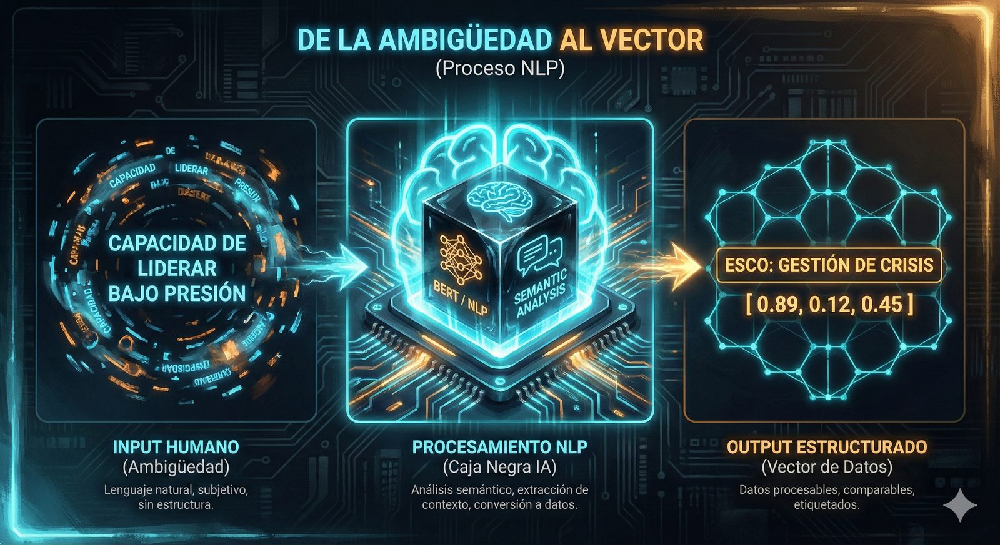
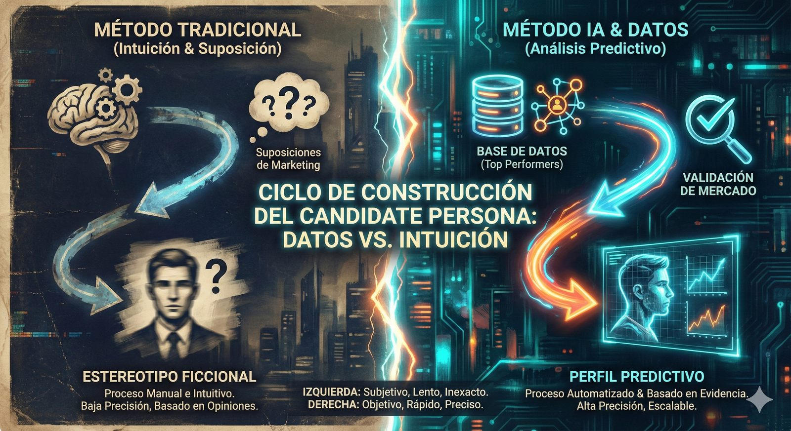
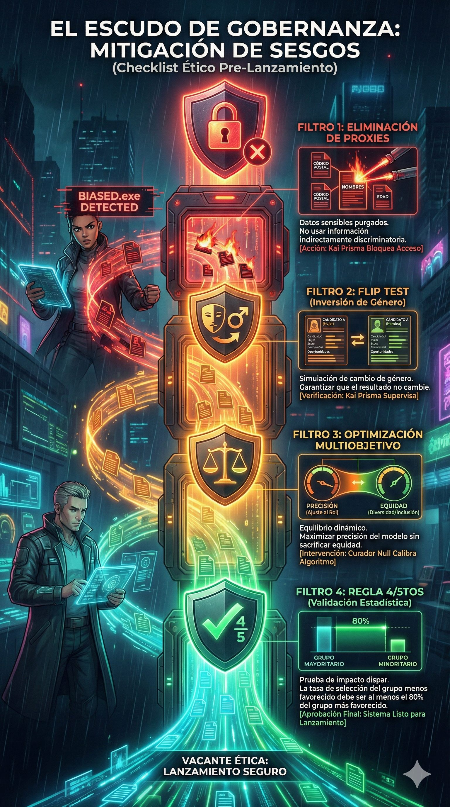

Has pasado horas redactando el perfil. Pides "pasión", "proactividad" y "ADN innovador". El algoritmo te devuelve cientos de CVs que coinciden con las palabras, pero ninguno con la realidad. BIASED.exe sonríe: acabas de crear un filtro basado en fantasías, no en datos.
Curador Null: "Detén la escritura. Estás describiendo un fantasma. El perfil no es un retrato artístico del candidato ideal; es el plano técnico del instrumento con el que vamos a medir. Si el plano está mal, la IA solo amplificará tu error a velocidad luz."
1. De la Descripción Estática al Vector Matemático
El primer error del Reclutador 4.0 es creer que la IA "lee" como nosotros. No lo hace. La IA transforma tus palabras en matemáticas. La transformación del perfilamiento de vacantes implica un alejamiento de las descripciones estáticas hacia modelos dinámicos .
Kai Prisma: Verificación de Realidad
Si escribes "Experto en Python", ¿te refieres a la serpiente o al código? Para ti es obvio. Para una IA mal calibrada, es solo una cadena de texto. Necesitas entender cómo la máquina "vectoriza" tus deseos.
La Traducción Semántica (NLP)
Las técnicas de Procesamiento de Lenguaje Natural (NLP) actúan como el puente entre el lenguaje humano y la comprensión de las máquinas . A diferencia de la búsqueda antigua de palabras clave (Boolean), los modelos modernos como BERT analizan el contexto semántico y la intención .
- Búsqueda Literal: Busca "Java" → Encuentra "Java".
- Análisis Contextual (BERT): Entiende que "Java" junto a "Spring Boot" es programación, pero "Java" junto a "Sumatra" es café o geografía .

Fig 1. La IA convierte texto subjetivo (JD Texto) en comprensión semántica (NLP) y finalmente en un Vector medible.La Importancia de las Taxonomías (ESCO / O*NET)
Para que el perfilamiento sea efectivo a escala, debes hablar el idioma estándar. El uso de taxonomías como ESCO permite normalizar títulos. Un "Ingeniero de Software II" en una corporación se traduce a las competencias exactas de un "Backend Developer" en una startup .
2. Construcción del Candidate Persona (Metodología de 5 Pasos)
Olvida el "Avatar de Marketing" inventado en una lluvia de ideas. El candidate persona en la era de la IA se construye sobre una base sólida de datos internos y externos, no de suposiciones . Es una representación semi-ficticia, pero matemáticamente validada.

Fig 2. Ciclo de Ingeniería del Candidate Persona: Datos, Clusters, Mercado y Mensaje.- Paso 1: Análisis de "Top Performers" (Datos 3D). La IA ingiere datos de éxito reales.
- Paso 2: Investigación Cualitativa Automatizada. Análisis de rasgos y valores.
- Paso 3: Clustering (K-Means). Agrupación por similitudes no evidentes.
- Paso 4: Validación de Mercado. Análisis de disponibilidad y costos.
- Paso 5: Personalización del Mensaje. Generación de mensajes que resuenan.
ALERTA DE BIASED.EXE
"¿Por qué complicarse? Solo clona el perfil de tu último gerente exitoso..."
Error Crítico: Clonar perfiles pasados perpetúa la falta de diversidad.
3. Midiendo lo Invisible: KPIs 5.0
| Métrica Tradicional | Métrica IA (Recomendada) | Por qué cambiar |
|---|---|---|
| Time to Fill | Time-to-First-Touch | Mide velocidad de reacción. |
| Costo por Contratación | Marginal Cost-per-Hire | Analiza costo incremental. |
| Número de Contrataciones | Quality of Hire (QoH) | La métrica reina: Desempeño + Retención. |
4. El Cortafuegos Ético: Mitigación de Sesgos
Los algoritmos pueden actuar como "cajas negras" que replican y amplifican sesgos históricos .

Fig 3. El proceso de purificación de datos: eliminar proxies y filtros de equidad.Desafío del Curador Null
Caso: Priorizar palabras como "agresivo".
Corrección: No. Ese lenguaje sesga contra mujeres. Debes mapear la competencia "Persuasión" (ESCO).
Mini Evaluación: Calibración de Criterio
1. ¿Cuál es la principal diferencia entre una búsqueda por palabras clave y una búsqueda semántica con BERT?
2. ¿Qué técnica se utiliza para verificar si un modelo de IA tiene sesgos ocultos?